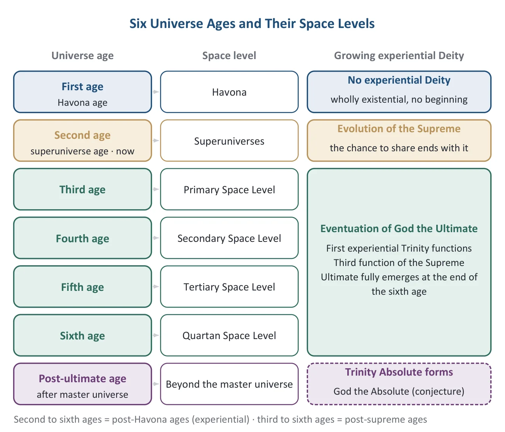

Las edades del universo
Original: Apéndice IV, Las edades del universo (pp. 190–212)
EN ESTE CAPÍTULO
Si el Apéndice III dividía el universo maestro según el espacio, el Apéndice IV divide ese mismo universo maestro según el tiempo. El libro de Urantia habla de una edad de Havona, una edad superuniversal y unas edades de los universos exteriores; Sadler las empareja con los seis niveles espaciales y llega a seis edades del universo. Luego sigue a través de estas edades a la Deidad experiencial, a Dios el Séptuple, a Havona, a los superuniversos, a los universos locales, a los hijos relacionados con la Trinidad y a los finalistas, poniendo las afirmaciones del propio texto junto a sus inferencias.
1. Seis edades del universo y seis niveles espaciales (orig., pp. 190–192)
Las grandes divisiones del tiempo
El libro de Urantia llama al tiempo y al espacio un «mecanismo conjunto» del universo maestro [118:9.1]. Si los seis niveles espaciales son las grandes divisiones del espacio, las edades del universo son las grandes divisiones del tiempo. El texto las nombra en este orden:
La principal cronicidad del universo maestro se preocupa de varias edades universales: la edad Havona, la edad superuniversal y las edades de los universos exteriores.115:3.18
Sadler asigna una edad de los universos exteriores a cada uno de los cuatro niveles del espacio exterior y cuenta así seis edades en total. La primera edad corresponde al nivel espacial de Havona; la segunda, al nivel espacial superuniversal; y de la tercera a la sexta, a los niveles espaciales primero, segundo, tercero y cuarto. Vivimos ahora en la segunda edad, la edad superuniversal. En el emparejamiento de tiempo y espacio que hace Sadler, el amanecer de cada nueva edad significa la apertura y el desarrollo de un nuevo nivel espacial. Sin duda algo seguirá a la sexta edad, pero como queda más allá de la terminación del universo maestro, él le da un nombre propio: la edad post-última.

La primera edad: sin comienzo, pero con fin
Sadler recuerda que la Edad Cero del Apéndice I nunca fue una edad real, sino solo un punto de partida para el pensamiento, y lee la expresión del texto «los albores de la eternidad» [31:9.3] como el «comienzo hipotético» de una edad de Havona que en realidad no lo tuvo.
La primera edad es única en varios aspectos. Como el propio universo central, pertenece a la eternidad pasada y no tiene comienzo en el tiempo. Es presuprema y preúltima, por tanto preexperiencial, y por consiguiente enteramente existencial. Sadler la considera también precreacional y preevolucionaria, basándose en que los nativos de Havona, aunque son vástagos de la Trinidad, se describen como seres «que no fueron creados» [14:4.10].
Sin embargo, la primera edad sí tiene un fin. Sadler conjetura que su límite cayó cerca de la trinidización de los Ancianos de los Días, o quizá en el momento en que la Trinidad encargó la organización de los siete superuniversos.
Lo que comparten las edades post-Havona
Las cinco edades que siguen a la primera las reúne Sadler bajo un solo nombre: las edades post-Havona. Cada una tiene un comienzo y un fin en el tiempo, y todas son experienciales. El libro de Urantia sitúa la actualización de la Deidad experiencial precisamente en este periodo:
Dios el Supremo, Dios el Último y Dios el Absoluto son personalidades de Deidad que están actualizándose y que corresponden a las épocas post-Havona en el tiempo y en el espacio y a las esferas en la trascendencia del espacio y el tiempo de la expansión evolucionaria del universo maestro.0:7.1
Sadler señala otra característica de estas edades: una procesión que se mueve a la vez en dos direcciones. En la edad presente los Creadores Supremos descienden mientras las criaturas evolutivas ascienden. En la edad siguiente los finalistas saldrán al espacio exterior, y los seres nativos del espacio exterior ascenderán hacia dentro pasando por los superuniversos perfeccionados.
La singularidad de la segunda edad y la ampliación del destino
La edad presente también es única, pues es la edad en que el Ser Supremo evoluciona y crece. Cuando ese crecimiento se complete, la edad se cerrará y la oportunidad de participar en él no volverá.
En algún momento del futuro eterno, la evolución de la Deidad Suprema se tornará un hecho completado de la historia universal, y la oportunidad de participar en esta extraordinaria experiencia habrá pasado de la etapa de acción cósmica.31:10.12
Sadler observa además que las edades sucesivas amplían el destino: cada edad permite a la siguiente ir más allá de los límites de crecimiento de la anterior. El texto ofrece a Havona como modelo.
Havona, en sí misma y por sí misma, es una creación perfecta pero limitada por su perfección118:0.13
2. La Deidad experiencial edad por edad (orig., pp. 192–196)
En la primera edad no hay Deidad experiencial; cada edad posterior está marcada por su crecimiento. Sadler reúne las pistas textuales en cuatro periodos, y la tabla siguiente las resume.
| Periodo | Ser Supremo | Trinidades experienciales | Dios el Último |
|---|---|---|---|
| Edad presente | Presente en Havona como personalidad espiritual; actúa como personalidad de poder soberana en el gran universo; aún no se lo puede encontrar | La primera y la segunda son ambas realidades limitadas | Presente en Havona en un sentido subabsoluto y superpersonal |
| Fin de la edad presente | Emerge y se vuelve contactable; reemplaza a los Ancianos de los Días como soberano superuniversal | La primera Trinidad experiencial se forma como un hecho | Se aproxima como el desafío de la edad siguiente |
| Edades post-supremas | Tercera función a escala del universo maestro; supertodopoderoso de los universos exteriores | La primera Trinidad experiencial coordina el universo maestro | Poder-personalizado como soberano del universo maestro |
| Edad post-última | (Asociación Supremo-Último) | La Trinidad Absoluta se forma como un hecho | ¿Conduce a la revelación de Dios el Absoluto? |
Con cada edad cambia el objeto del gran desafío. Para nosotros el desafío actual es encontrar a Dios el Supremo, pero para los finalistas Dios el Último se perfila ya como el siguiente. El texto dice que Dios el Último prefigura su supercontrol trascendental durante las etapas posteriores de un universo local establecido en luz y vida [56:7.5]. En cuanto a la tercera función del Ser Supremo, los propios reveladores admiten: «Pero nadie de entre nosotros lo sabe verdaderamente» [116:0.5]. Sadler, por su parte, enumera tres conjeturas y se abstiene de elegir entre ellas.
3. Dios el Séptuple y el futuro de los Creadores Supremos (orig., pp. 196–199)
Una función que se amplía
Las relaciones universales de las Deidades del Paraíso no se alteran por el desarrollo experiencial de los universos. Por eso Sadler se vuelve hacia los Creadores Supremos dentro de Dios el Séptuple —los Espíritus Rectores, los Hijos Creadores y los Ancianos de los Días— y se pregunta qué les depara el futuro. Su punto de partida es este pasaje:
La función de Dios el Séptuplo data de la organización de los siete superuniversos, y probablemente se ampliará en relación con la evolución futura de las creaciones del espacio exterior.0:8.12
El texto dice que, a medida que las creaciones del tiempo se establecen, Dios el Supremo funciona más plenamente mientras la actividad de los Creadores Supremos se retira en proporción. ¿Saldrán entonces al espacio exterior? El texto deja abierta la pregunta: «No lo sabemos» [56:7.6].
Tres grupos, tres perspectivas
Los Siete Espíritus Rectores. Tomados en conjunto, los Espíritus Rectores poseen los atributos de Supremo, Último y Supremo-Último, y de ello infiere Sadler que tienen la capacidad de funcionar hasta la edad post-última. El texto dice que los Ancianos de los Días y los Espíritus Rectores «están probablemente eternamente asignados como administradores permanentes en el gran universo» [0:8.11], pero Sadler lo lee como una fijación de residencia más que del alcance de su actividad. Su apoyo es la afirmación de que las moradas ejecutivas de los Espíritus Rectores son las sedes centrales en el Paraíso de los siete superuniversos «y sus segmentos correlativos en el espacio exterior» [13:4.6].
Los Ancianos de los Días. Puesto que la evolución del Supremo aún no está completa, ellos proporcionan ahora el pleno supercontrol administrativo [18:3.9]. Cuando termine esta edad, el Ser Supremo, el soberano experiencial, ocupará su lugar, y ellos llegarán a ser sus vicerregentes.
este derecho a gobernar no lo han ganado experiencialmente y por lo tanto estan destinados en un futuro a ser reemplazados por el Ser Supremo, un soberano experiencial18:3.8
Los Hijos y los Espíritus del Universo. El texto describe así la relación entre el Hijo Eterno y el Espíritu Infinito:
En todas las creaciones subsecuentes el Espíritu mantiene con el Hijo la misma relación personal que el Hijo mantiene con el Padre en la creación central primaria.8:3.3
Sadler sostiene que esta relación se está realizando en la práctica no tanto por el Hijo y el Espíritu del Paraíso como por el Hijo Creador y el Espíritu Creativo de cada universo local. El texto recoge la opinión de que las edades futuras pueden traer una unión más estrecha entre ambos, de la cual podría eventuarse un nuevo creador asociado de naturaleza última [56:7.7], y conjetura que los Hijos Creadores están destinados a funcionar en los universos exteriores. La idea de que los Micaeles Mayores puedan un día trasladar su esfera de estado de Sonarington a Vicegerington es una suposición del propio Sadler y no tiene base en el texto.
4. Havona: ayer, hoy y mañana (orig., pp. 199–202)
Sadler contempla el universo central desde cuatro puntos de vista: ayer, hoy, mañana y el futuro lejano.

Ayer. En la primera edad, Havona no sufrió ningún cambio evolutivo [106:0.18] y no necesitaba centros de poder. Era una creación perfecta, aunque limitada por su propia perfección.
Hoy. La Havona actual ya no es la Havona de ayer. Ha aparecido la personalidad espiritual del Supremo; la organización de los superuniversos ha traído cambios, y la llegada de los Grandfanda ha traído más. Los Espíritus de los Circuitos se han hecho visibles en su trabajo, han aparecido los Guías de los Graduados y los supernafines secundarios, y los ciudadanos del Paraíso han comenzado su peregrinación hacia fuera a través de Havona. El propio texto reconoce la diferencia:
Sabemos que el Havona de la era universal anterior era un tanto diferente del Havona de la edad presente.19:6.8
Mañana. Las necesidades de mañana ya se dejan ver en la Havona de hoy. Se piensa que los Censores Universales destacados en cada uno de los mil millones de mundos están situados con miras a las edades futuras, cuando la población de Havona cambie [19:4.2]. Los nativos de Havona pueden dejar algún día de ingresar en el Cuerpo de la Finalidad, y los residentes de Havona pueden llegar a ser mixtos [19:6.4]. De ello infiere Sadler que en las edades post-supremas Havona se convertirá en un universo de capacitación para seres absonitos.
Havona tiene la capacidad de servir como universo de capacitación para seres absonitos.14:6.41
El futuro lejano. Sadler concluye que, incluso en la edad post-última, una vez completado el universo maestro, Havona seguirá siendo el modelo de la perfección divina. El texto expresa asimismo la opinión de que «las potencialidades de Havona eterna son realmente ilimitadas» [14:6.41].
5. Las edades de los superuniversos y de los universos locales (orig., pp. 202–208)
De la primera edad a la segunda
Sadler reconstruye el paso de la primera edad a la segunda en cuatro etapas. El texto no da ninguna cronología; él entreteje pistas dispersas en un orden verosímil.
- La primera edad no cualificada. La Tercera Fuente y Centro llega a ser eterna junto con Havona, y los nativos de Havona no tienen origen.
- El fin de la primera edad. La personalización del Espíritu Infinito cierra el ciclo existencial de la personalización de la Deidad; la personalización siguiente, la de los Siete Espíritus Rectores, fue subabsoluta. Sadler toma la aparición de seres experienciales como señal de que la primera edad se acerca a su fin.
- La era cercana a la eternidad, los «albores del tiempo». Los Mensajeros Solitarios, los directores y centros de poder y los Espíritus Reflexivos aparecen más o menos en esta época. Sadler entiende que ambas expresiones designan un mismo periodo.
- El comienzo de la historia superuniversal. La primera entrada de los registros del Paraíso es la trinidización de los Ancianos de los Días; todo lo anterior pertenece a la prehistoria.
Después de luz y vida
Cuando los superuniversos se establezcan en luz y vida, el Ser Supremo llegará a ser el soberano experiencial de los siete superuniversos. El texto expresa la creencia de que las líneas divisorias entre los siete superuniversos se desvanecerán y de que el gran universo llegará a funcionar como un todo perfeccionado [117:7.15]. Sadler ve aquí una versión cósmica de lo que sucede en un solo planeta, donde las razas evolutivas desarrollan culturas separadas y luego se mezclan en la edad adámica. Los Supervisores No Cualificados del Supremo se convierten en el alto cuerpo administrativo en las sedes centrales de los superuniversos [55:12.3], y la labor de los Creadores Supremos disminuye.
Luz y vida no es todavía el fin. El texto llama al estado establecido solo el límite de crecimiento «para la presente edad universal» y dice que la edad siguiente liberará a los superuniversos de esa limitación [106:0.18]. También en los universos locales se están desarrollando nuevas relaciones entre los Hijos Creadores, los Espíritus Creativos, los Hijos Instructores, las Estrellas Vespertinas y los finalistas [55:10.9]. Sadler infiere que todos ellos servirán algún día juntos en el espacio exterior.
Sadler plantea además una pregunta sencilla pero aguda. Los ascendentes de mundos que han pasado la tercera etapa de luz y vida reciben una asignación transitoria en un planeta que aún se halla en las primeras etapas de la evolución [55:3.11]. ¿Qué ocurrirá, entonces, cuando ya no quede ningún planeta así? El texto no da respuesta, pero la pregunta recuerda que también los universos locales deben entrar en una nueva fase en la edad siguiente.
6. Los hijos trinidizados y los finalistas (orig., pp. 208–212)
Seres que pertenecen a otras edades
Algunos de los hijos relacionados con la Trinidad viven en la edad presente, pero tienen el estado de otra.
- Hijos abrazados por la Trinidad. Los Mensajeros Poderosos son, «en cuanto a nuestro estado, como de la edad universal precedente», y no participan en el crecimiento de la presente [117:2.4].
- Hijos trinidizados por criaturas. Nacen y viven ahora, pero se los mantiene en reserva para la edad venidera.
estos hijos trinidizados por criaturas, aunque se encuentran en la presente edad universal, son realmente de la próxima edad universal —la edad que seguirá cuando se complete el crecimiento del Supremo.117:2.3
- Hijos Trinidizados de Destino. Encarnan conceptos que trascienden los límites creativos de la presente edad universal, y todos se mantienen en reserva en Vicegerington [22:7.14].
Dicho de otro modo, dentro de una sola edad conviven seres de varias edades.
Las tres edades del finalista
La segunda edad. Al ingresar en el Cuerpo de la Finalidad, el ascendente pasa por la experiencia llamada trascendación finalista, queda aliado de una manera nueva con el circuito de gravedad espiritual del Hijo Eterno y se vuelve candidato al reconocimiento como personalidad de Dios el Supremo [117:5.3]. Sadler sospecha que hay un vínculo entre este acontecimiento y la afirmación de que, en la sexta etapa de la existencia espiritual, cierto factor mental de enlace pasa a la dote experiencial del Supremo [107:5.6].
Las edades post-supremas. El destino de los finalistas está en el espacio exterior. El texto expresa la creencia de que los mortales fusionados con el Ajustador, junto con sus asociados finalistas, están destinados a participar en la administración del primer nivel del espacio exterior [112:7.17]. Los seres nativos de los universos exteriores no participarán en el crecimiento del Supremo, y los finalistas suplirán esa carencia. Al alcanzar la séptima etapa de la existencia espiritual, sus mentes duales se unirán a la mente del Supremo y se volverán así triunas.
La edad post-última. Aquí Sadler se vuelve hacia la séptima dimensión de la personalidad mortal.
Esta suprema dimensión es un absoluto asociable y, aunque no infinito, es dimensionalmente potencial para la penetración subinfinita de lo absoluto.112:1.9
Si a esto se añade la «fase de la absolutez potencial cualificada» que confiere la fusión con el Ajustador [112:7.1], la conclusión de Sadler es clara: nada detendrá el crecimiento de los finalistas, ni siquiera después de completado el universo maestro.
Sadler y el texto: referencias corregidas
El Apéndice IV contiene varias referencias con erratas. El pasaje que afirma que la función de Dios el Séptuple data de la organización de los siete superuniversos es 0:8.12 (impreso en el original como 0:10.12 y 0:13.12). El estado de los Mensajeros Poderosos se da en 117:2.4 y el de los hijos trinidizados por criaturas en 117:2.3 (impresos como 17:2.4 y 172:3.14). El pasaje sobre la sucesión de las edades es 115:3.18 (impreso como 15:3.18), y los Secretos Trinidizados de la Supremacía aparecen en 18:1.1 (impreso como 8:1.1). Para los hijos trinidizados de destino, este libro cita 22:7.14, donde se describe su relación con los Arquitectos del Universo Maestro.
Puntos clave
- Sadler divide el tiempo del universo maestro en seis edades del universo y empareja cada una con uno de los seis niveles espaciales. Vivimos en la segunda, la edad superuniversal.
- La primera edad, la edad de Havona, no tiene comienzo pero sí fin, y es enteramente existencial. Las otras cinco, las edades post-Havona, son todas experienciales.
- La segunda edad es la única edad en que evoluciona el Ser Supremo; una vez terminada, la oportunidad de participar en ese crecimiento no volverá.
- Las edades sucesivas amplían el destino. Havona pasa de una perfección estática a un universo que cambia y luego hacia un universo de capacitación para seres absonitos, mientras que luz y vida es solo el límite de crecimiento de la edad presente.
- Los hijos abrazados por la Trinidad, los hijos trinidizados por criaturas y los hijos trinidizados de destino viven todos ahora, pero cada grupo tiene el estado de una edad distinta.
- Los finalistas están destinados a revelar al Supremo en el espacio exterior, y Sadler infiere que su crecimiento continúa hasta la edad post-última.